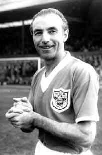

Stanley MATTHEWS - 1956
- Surnommé The wizard of the Dribble (en français : « le sorcier du dribble »)
Stanley Matthews
remporte à 41 ans, en 1956, la première édition du Ballon d'or récompensant le meilleur joueur européen de l'année.
Nationalité : Anglaise
Né le 1er février 1915, à Hanley (ANG)
Décédé le 23 février 2000, à Hanley (ANG)
Taille : 1,74
Poids : 69 kg
Poste : attaquant
Clubs : Stoke City (1931-1947), Blackpool (1947-1961) et Stoke City (1961-1965)
Palmarès : Coupe d'Angleterre 1953
Bilan en club : 780 matchs, 80 buts
Bilan en équipe d'Angleterre : 54 sélections A, 11 buts (1934-1957)
Bilan en phase finale de Coupe du monde : 2 participations, 3 matches (1950-1954)
Palmarès Ballon d'Or : vainqueur en 1956
Carrière d'entraîneur : Port Vale (1965-1968)
Classement du Ballon d’Or France Football 1956 :

Stanley Matthews (Angleterre / Blackpool),
47 pts.
Alfredo Di Stefano (Espagne-Argentine / Real Madrid),
44 pts.
Raymond Kopa (France / Real Madrid),
33 pts.
Retour à l'accueil
 Stanley MATTHEWS - 1956
Stanley MATTHEWS - 1956